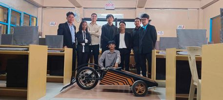

Educaton:
Currently pursuing a Bachelor's/Master's/Ph.D. in Computer Science EMA EMITS College Philippines (2021-2024)
Skills:
Proficient in programming languages such as Python, Java, C/C++, etc. Knowledgeable in data structures and algorithms Familiar with software development methodologies (Agile, Scrum, etc.) Experience with web development frameworks (such as Django, Flask, React, Angular, etc.) Understanding of databases (SQL, NoSQL) Proficiency in version control systems like Git Basic understanding of machine learning and artificial intelligence concepts Strong problem-solving and analytical skills
See My Project
